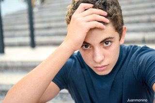

.

When I was a Senco in an inner-city junior school I remember realising that some of the children I was working with were not learning or open to working for reasons completely unrelated to their lack of intelligence or speech and language difficulties. A father came into school drunk one day and caused chaos in the classroom. A mother regularly screamed at her son as he ran away from her at home time, evoking further screaming and running away.
These children need a different sort of help I thought. By chance I heard of educational psychotherapy (called educational therapy at the time) and this set me on a path of training with the ‘Forum for the Advancement of Educational Therapy’, now called Caspari Foundation, which has been the foundation of my work and thinking ever since.
The training involved a weekly baby observation for a year, a nursery child observation for another year and theoretical lectures on attachment, psychodynamic thinking, family, and school systems and dynamics, and weekly supervised educational psychotherapy with children for the second half of the course. A clinically supervised weekly work discussion was a particularly important and helpful part of the training. In small trusted groups we took turns to share detailed observations of children who puzzled or frustrated us. We then thought together about possible meanings and causes of such difficulties and how we might more helpfully work with them.
I have found this thinking invaluable in my work ever since. The ‘Forum for the Advancement of Educational Therapy’ is now called the Caspari Foundation after its originator Irene Caspari, who had a similar realisation in her work at the Tavistock Clinic in the 1960’s
Click link below for Caspari foundation website (caspari.org.uk)
.
'The book, the posters and the Safe to Learn Course all arose out of my Caspari training and arose out of my Caspari training and out of my various work experiences in Southend Borough Council. These included being a Senco for 15 years at an ‘inner city’ junior school - in the days when Senco’s worked directly with children, as well as with teachers, TA’s, parents and other professionals. During this time I was funded by Essex County Council to train as an educational psychotherapist at the Caspari Foundation in London, for which I am profoundly grateful, as it lead to all the experiences described below, and ultimately to the book: ‘Understanding, nurturing and working effectively with vulnerable children in schools’; “Why can’t you hear me?” (Routledge 2020).
In the early 2000’s I started work working as an Educational Psychotherapist in a
Southend Education Department project located at Southend Women’s Aid, offering
educational psychotherapy to children affected by domestic violence, alongside their
mothers accessing their own counselling. It was, and still is, sadly quite common for
schools and classes to include children who are or have been experiencing or witnessing
domestic abuse, and predictably both their inner and outer worlds and their openness
to learning are often severely affected and inhibited.
This work was located at the local Women’s Aid Support and Contact Centre offering
psychotherapy to children alongside their mothers receiving their own counselling. It
was initiated by a Local Authority Education inspector and funded by government SRB
funding. It had good links with the schools, and Educational Psychologist services, the
various local Women’s Aid facilities, the local foster and adoption agency, and the Social
Care family support centre. The Women’s Aid support centre was just across the road
where the mums could access legal and housing advice, small group support for them
and their children and an open friendly coffee bar. The psychotherapy project was
located in the Family Contact Centre across the road, and included waiting areas,
friendly welcoming staff, both therapy rooms and family play rooms - one of which was
big enough for us to host courses. As time went on we offered courses to both Women’s
Aid and school staff on understanding the effects of Domestic Violence on children - and
related subjects. As it was an Education project, we had regular reviews with school staff
as well as the usual parent review meetings, although the therapy itself was of course
confidential. I also occasionally saw mothers and toddlers for therapeutic sessions in the
big playroom. There were funds in the budget for training and although the Art therapist
and myself were qualified and experienced therapists we both went on a number of
courses. I went on several Tavistock courses during the 5 years of the project. I also did a
lot of reading around the subject of Domestic Abuse and we both had regular
supervision for our work.
When the project funding finished I briefly worked as the ‘complex difficulties advisor’ in SBC, and finally as a consultant, clinical supervisor, trainer and psychotherapist at the Pupil Referral Unit - which was a huge learning curve. It was during this time that I saw first-hand the big difference understanding can make. That is understanding the effects of insecure attachment and trauma on both behaviour and on learning, and understanding the ordinary unconscious processes which insecure children evoke and act out. We also saw how giving the children a ‘second chance’ experience of secure attachment, of being ‘held in mind’ and of feeling ‘heard’, can slowly shift their dysfunctional patterns and enable openness to learning and relating within the context of trusted relationships and settings. Understanding also how helpful clinical supervision and case discussions could be for those working with such children was crucial, both for the staff and for the students in their care. It enabled staff to feel heard and held in mind too, as well as giving them a space to think together about the challenging children and young people they worked with. We could see the difference these discussions, training sessions and reflections were having on the children and on the ethos in the PRU. I remember for example, how during that time exclusions slowly became a thing of the past, and the regular ’necessary’ holding down of dysregulated children was reduced to almost nothing. The ’time out room' was well used though - when out of control children accompanied by an understanding but silent adult would go to calm down.
When my work at the PRU ended I moved into self-employed clinical work with children (mostly in schools) and my training work increased and developed attracting many teachers, teacher assistants, Youth Offending Team workers and some social workers etc.
At the same time Educational Psychologist Tina Axup and I were also offering voluntary case discussion and support groups for local staff who wanted to work in a more nurturing way with their vulnerable children and young people. At various times these included a ‘teachers support group’, a ‘counselling support group’ and a ‘nurture group network’.
Tina and I also wrote and facilitated the ‘Safe to Learn’ 8 session course funded by Southend Borough Council (for which I wrote five out of the eight modules). The course combines a teacher friendly version of psychodynamic and attachment-based thinking with a deep knowledge of vulnerable children and the challenge they present to schools and staff, leading onto many practical ways forward in the light of this understanding. A version of ‘Safe to Learn’ indeed continues to this day lead by the EP service under the ‘Healthy Schools’ umbrella.
Slowly I realized that this understanding and relationship-based approach needed to be known about more widely. So after retirement the book developed - out of all these experiences, and particularly out of the interlinked twilight courses for those working with vulnerable and challenging children.
A ‘book version’ of the ‘Safe to Learn’ PowerPoints are included on the Routledge ‘Understanding, nurturing and working effectively with vulnerable children in schools’ resource page, as an eResource linked in to the book – accessible by a code at the end of the Safe to Learn Appendix in the book.
And with Routledge’s permission this version of the Safe to Learn course is now freely
available, together with other related resources, for trainers and school staff on my
website:
www.angelagreenwood.net